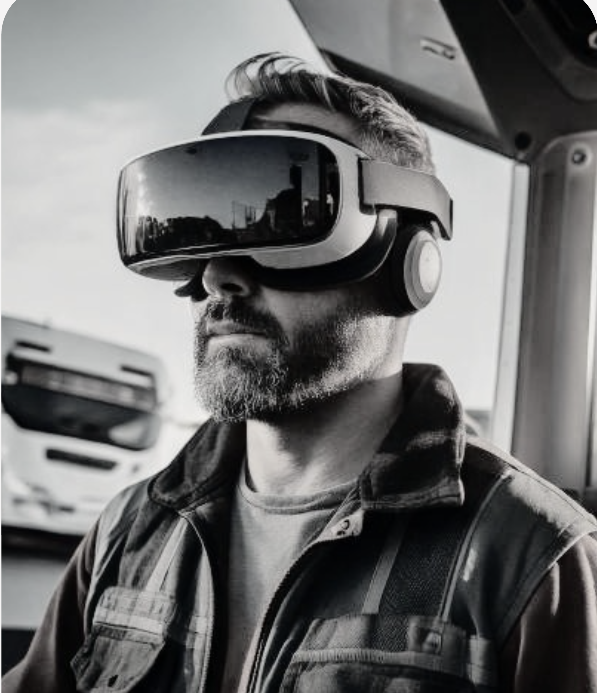

Improve User Experience of VR Training Simulator, HiSkill
HiSkill is a VR-based crane operator training simulator designed to provide safe, scalable, and cost-effective training. It improves the onboarding experience—from login to the full session that helps the trainee learn and master the crane's controls and movements.

Introduction
HiSkill is a VR-based crane operator training simulator that helps companies to train new workers safely, cost-effectively, and faster than before. By combining virtual reality with actual equipment, it provides a realistic environment where trainees can practice handling challenging situations without real-world risks.
My task was making the simulator approachable, defining user flow of the onboarding process, UI design, and branding. The onboarding flow helps the trainee to learn navigation, learn basic movements, and master the crane's controls before they step into the simulator.
My role
As a UX Designer, I was responsible for:
- Conducting user research & usability testing
- Designing wireframes and prototypes based on user requirements
- Creating visual UI elements as required
- Communicating closely with developers and stakeholders
Goal
The goal was to make the HiSkill experience consistent, clear, and scalable.
- The brand's visual identity was inconsistent across platforms.
- The UI was incredibly difficult and cumbersome, specifically establishing clear design system elements.
- Important foundational rules and guidelines were missing, resulting in inconsistent quality and documentation.
Process
01. Understand the problem
Before designing for VR, I first wanted to understand the medium from a user's perspective. My previous VR experience was limited to a few games, so I explored a range of VR applications across education, fitness, and gaming, paying particular attention to onboarding, navigation, and interactions.
I also reviewed VR UX literature and design guidelines from Google and Oculus.
I also conducted UX/UI research and coordinated design outcomes, then tested visual design frequently with the product owner and key stakeholders for improved find-ability. This research helped me understand what would make the experience feel more intuitive and approachable for first-time UI users.
02. Align on the Challenge
With a better understanding of the market and product, I worked with the cross-functional team including developers and the project manager to align on the key challenges and priorities.
Through design workshops, we defined the features identified as high value and possible solutions, and alternative scenarios, and long-term goals. This helped us distinguish between immediate UI improvements and structural decisions that would support the product as it expanded into different markets.
03. Explore & Design
The main design challenge was to make VR approachable for users who had limited or previous VR experience, while ensuring a navigation structure flexible enough to support different markets, languages, and content.
I explored different approaches to onboarding a user into the project on the page which was part of prototypes. For this set task our priority was on introducing the VR environment and smooth transitions between a generic portal and the training room in a seamless transition.
For the main navigation, I explored various layout structures that could accommodate diverse content and user requirements while maintaining a consistent experience. Technical feasibility was considered throughout the design process, with close collaboration with developers.
04. Test & Iterate
Prototypes were presented in the room to gather feedback and identify potential issues before usability testing. Due to time and budget constraints, testing was limited internally with employees who had relevant experience.
Participants completed several tasks while wearing the VR headset, allowing me to observe how they navigated the experience in real-time while following a predefined script, followed by a post-usability interview that was first recorded to understand their interactions and information relevance to them.
The findings were then brought back into the design process. I restructured the onboarding and navigation based on the common pain points and feedback, effectively refining the experience to make it more representative and easier to navigate.
Impact
The redesign intended to provide a more relatable experience for users, addressing key usability challenges in both onboarding and navigation.
A more approachable first experience
The redesigned onboarding provided clearer guidance for users who are new to VR, helping them understand the environment and possible interactions before entering the training experience.
Clearer and more intuitive navigation
The new menu navigation simplified the overall information architecture and made it easier for users to understand where to go and how to start their training.
A more flexible system for different markets
The navigation structure was designed with different languages, content, and market requirements in mind, making it easy to localize the experience without redesigning the entire structure for each market.
Validated through user testing
Usability testing showed that 100% of participants felt the new menu improved the overall experience and efficiency. The testing also revealed opportunities for further refinement, which were incorporated into the final design iterations.